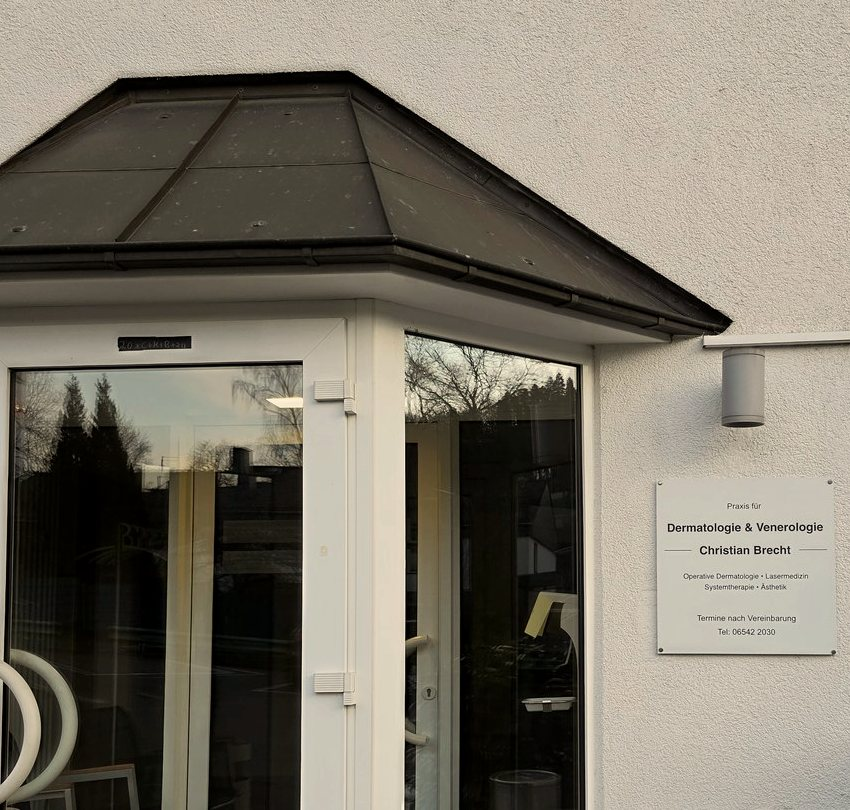

Hautarzt in Bullay.
Hautkrebsvorsorge, Muttermale, kleine Hautoperationen, Laser und Hilfe bei chronischen Hauterkrankungen.
Privatpraxis für Privatversicherte und Selbstzahler
Sie haben eine Frage zu Ihrer Haut? Dann rufen Sie mich an. Ich bin Christian Brecht, Facharzt für Dermatologie und Venerologie, und ich nehme mir für Sie die Zeit, die Ihre Frage braucht.

Womit Patienten zu mir kommen
Ein Muttermal hat sich verändert.
Wir schauen es uns gemeinsam an und bei der Gelegenheit auch den Rest Ihrer Haut. Hautkrebsvorsorge
Etwas an der Haut soll weg.
Ein Knoten, ein auffälliges Muttermal. Kleinere Eingriffe mache ich ambulant in der Praxis. Operative Dermatologie
Die Creme hilft seit Jahren nicht richtig.
Bei manchen chronischen Hauterkrankungen reicht eine Creme allein nicht. Dann sprechen wir über eine Behandlung von innen. Systemtherapie, Biologika
Raue, schuppige Stellen im Gesicht.
Das sind oft Folgen von viel Sonne. Manche Stellen sind Vorstufen von hellem Hautkrebs und lassen sich zum Beispiel mit Licht behandeln. Photodynamische Therapie
Äderchen, Flecken oder eine Narbe stören Sie.
Ob ein Laser passt, besprechen wir vorher. Wenn nicht, sage ich Ihnen das auch. Lasermedizin, Ästhetik
Es ist Ihnen unangenehm.
Fragen zu Geschlechtskrankheiten gehören zum Hautarzt. Was Sie mir sagen, bleibt in der Praxis. Venerologie
Ihr Anliegen ist nicht dabei? Rufen Sie an, dann klären wir das kurz am Telefon.
Reine Privatpraxis
Ich behandle Privatversicherte und Selbstzahler. Abgerechnet wird nach der Gebührenordnung für Ärzte (GOÄ). Über die gesetzliche Krankenkasse kann ich leider nicht abrechnen.
Die Zulassung für Fälle der Berufsgenossenschaft ist beantragt. Wenn Sie nicht sicher sind, ob das für Sie passt: kurz anrufen und fragen.
Wann und wo
- Montag geschlossen
- Dienstag 8:30 – 16:30
- Mittwoch 8:30 – 16:30
- Donnerstag 8:30 – 16:30
- Freitag geschlossen
Praxis Brecht
Neumerler Weg 5
56859 Bullay
Über die B49 Richtung Bullay, Abfahrt Bullay-Alf. Parkplätze direkt vor der Praxis.
Telefon 06542 2030
Fax 06542 1571
praxis@hautarzt-bullay.de
Termine nach Vereinbarung.
Zum ersten Termin bitte mitbringen
- Personalausweis
- Ihre Versichertenkarte, falls vorhanden
- Überweisung, falls vorhanden
- Vorbefunde oder Arztbriefe, wenn Sie welche haben
- Fotos auf dem Handy, wenn sich etwas verändert hat
Christian Brecht
Facharzt für Dermatologie und Venerologie.
| seit 2026 | Eigene Privatpraxis in Bullay |
| 2021 – 2025 | Weiterbildung Dermatologie und Venerologie, Zentrum für Hautgesundheit Neuwied |
| 2019 – 2021 | Assistenzarzt Radiologie, Katholisches Klinikum Koblenz-Montabaur |
| 2018 – 2019 | Assistenzarzt Innere Medizin, Medizinische Hochschule Hannover |
| Studium | Medizin, Johannes Gutenberg-Universität Mainz |
Rückruf zur Wunschzeit
Sie sagen mir, worum es geht und wann es Ihnen passt. Ich rufe Sie in diesem Zeitfenster zurück. Wer lieber gleich spricht: 06542 2030.
Vielen Dank für Ihre Anfrage.
Ihr Foto sehe ich mir vorher an.
Ich melde mich persönlich bei Ihnen.
Christian Brecht